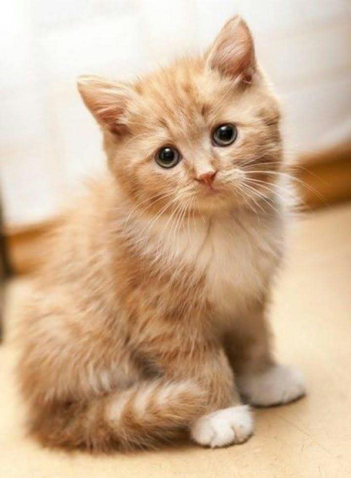
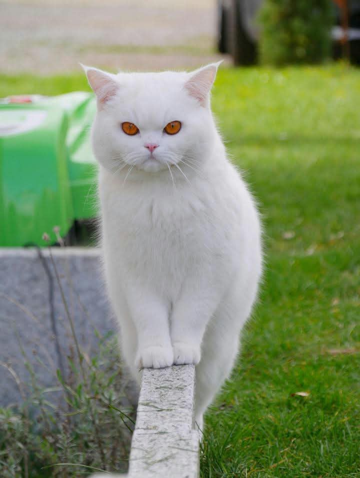
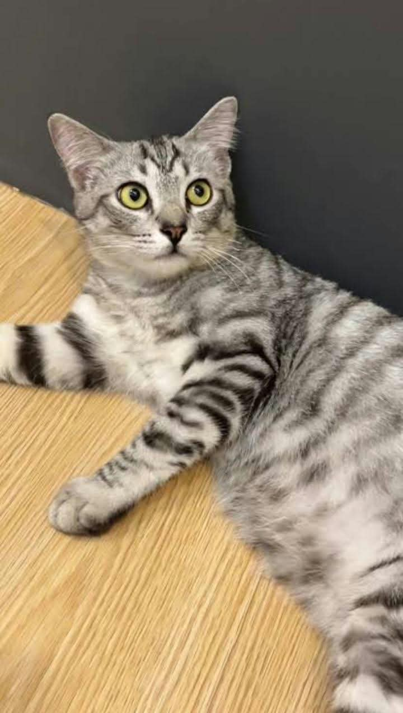

kucingoren

Kucing orange (atau kucing oren) bukan ras khusus, melainkan sebutan untuk kucing berbulu jingga atau oranye akibat pigmen pheomelanin.

Kucing orange (atau kucing oren) bukan ras khusus, melainkan sebutan untuk kucing berbulu jingga atau oranye akibat pigmen pheomelanin.

Kucing putih adalah kucing dengan bulu putih polos (solid white) yang dapat ditemukan pada berbagai ras maupun kucing domestik.

Kucing hitam (atau sering dipanggil kucing itam) adalah kucing dengan bulu gelap pekat akibat tingginya produksi pigmen eumelanin yang dikendalikan oleh gen dominan.

Kucing tiga warna, yang populer disebut kucing belang tiga, kembang telon, atau calico, merupakan kucing dengan pola warna bulu putih, hitam, dan oranye.

Kucing dengan bulu abu-abu dan hitam di Indonesia paling sering dikenal sebagai kucing mujair (grey & black tabby), black smoke, atau tortoiseshell abu-abu (dilute tortie).